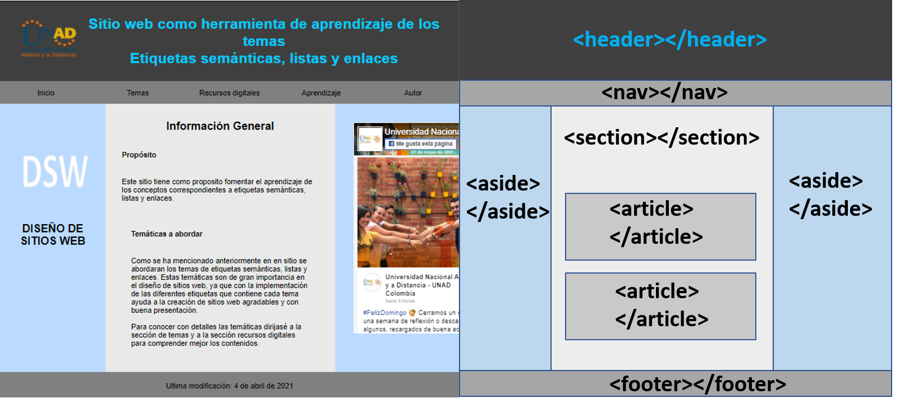

Sitio web como herramienta de aprendizaje de los temas
Etiquetas semánticas, listas y enlaces
Inicio
Temas
Tema 1
Tema 2
Recursos digitales
Recurso 1
Recurso 2
Aprendizaje
Actividad 1
Actividad 2
Actividad 3
Autor
Recurso digital de etiquetas semánticas
A continuación se explica por medio de audio las etiquetas semánticas.
